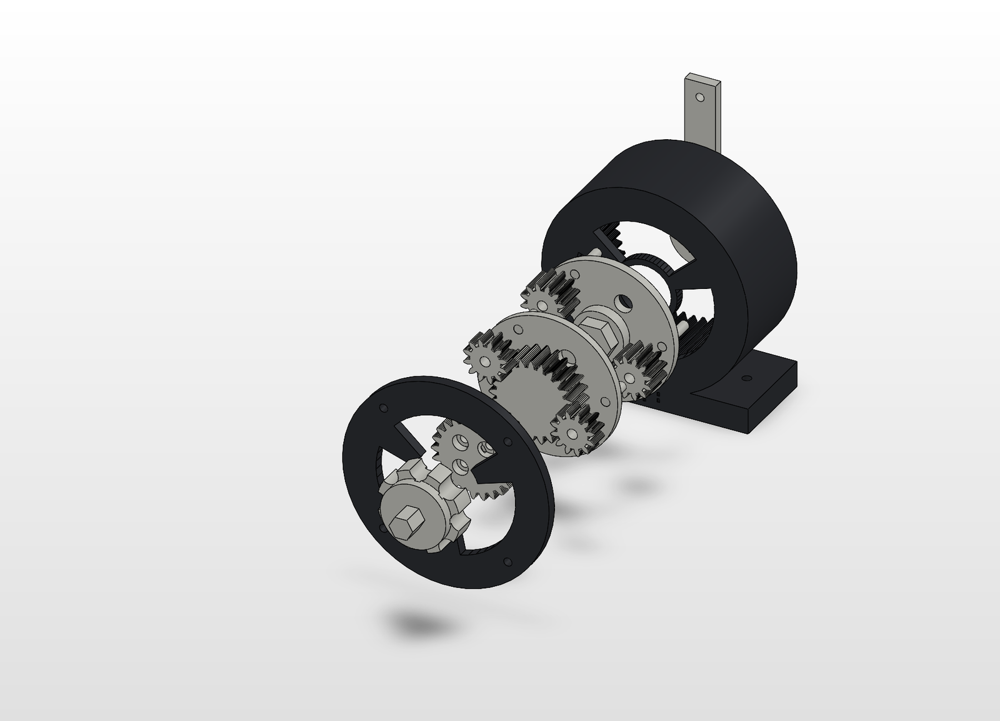

September 2026 / Printed and run
G9 planetary test box, 9:1
A two-stage planetary (24/12/48 teeth, module 1.25, 25° pressure angle) with printed pins and journals, hand-cranked. It assembled and ran as intended on September 20, 2026. No backlash or torque measurements were recorded.